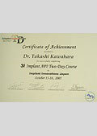
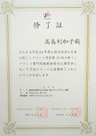

- TOP
- ドクター紹介
河原歯科クリニックのドクター紹介
大阪府高槻市の「河原歯科クリニック」は、JR京都線高槻駅より徒歩3分、阪急電鉄京都本線高槻市駅より徒歩5分の通いやすい環境にある歯医者です。プライバシーに配慮した治療空間でリラックスして診療を受けていただけるうえ、患者様の心に親身になって寄り添い、分かりやすいご説明を心がけています。担当医制での診療を基本に、歯科の各分野を専門に治療する歯科医師も在籍し、スタッフ一同が連携を図りながら高品質な診療をご提供します。こちらでは皆様を担当するドクターをご紹介します。
院長紹介
院長 河原 敬
ごあいさつ
こんにちは。大阪府高槻市「河原歯科クリニック」の院長、河原です。2008年の開院以来、地域の皆様にお口の中の不安やコンプレックスに悩まされることなく、食生活や日常の生活を送っていただきたい――その一心で日々診療しています。そのために、日進月歩する歯科医療の新しい知識や技術の習得に努め、新しい機材を積極的に活用し、精密治療をご提供するべく、邁進しています。当院には歯科の各分野に精通した専門性の高い歯科医師が在籍しており、医院の総合力を高めることで、さまざまなお悩みやご要望を叶え、安心できる治療のご提供を可能にしています。
「なかなか治らなくて……」「再発をくり返してばかりで……」など、他院や患者様からのご紹介で来院される方が増えている現状をふまえ、「どうにか治してほしい」という真剣な想いに応えるために、分かりやすいご説明を欠かさず、患者様に寄り添った診療をご提供いたします。口腔内全体を診て適切な診査・診断を行い、長期的な予後を考えた治療計画を立て、ご同意いただいたうえで治療を進めていきます。通いやすく、話しやすく、安心できる環境を整えていますので、お口まわりのお悩みは何でもお気軽にご相談ください。
経歴
-
1999年
大阪大学歯学部卒業
- 2003年
- 2003～2006年
-
2006～2008年
枚方市山羽歯科医院勤務
-
2008年
大阪府高槻市にて河原歯科クリニック開院
取得認定
-
臨床研修指導歯科医講習会
修了証 -
歯周組織再生材料
（エムドゲイン）
修了証 -
日本歯科保存学会認定
専門医認定証 -

3iインプラント
修了証 -

歯周病･インプラントコース
修了証
論文・著書


ドクター紹介
歯科医師 高島 利加子
経歴
-
2007年
大阪大学歯学部卒業
-
2007年
大阪大学歯学部附属病院研修医
- 2012年
- 2012～2014年
資格および所属学会
- 大阪大学博士（歯学）
- 厚生労働省卒後臨床研修指導歯科医
- 日本口腔インプラント学会
- 日本補綴歯科学会認定 専門医
- 大阪大学歯学会
- PEC（Postgraduate Education Course）修了
- ブローネマルクインプラントコース修了
- GCインプラントコース修了
受賞歴
-
2011年
日本骨代謝学会にてANZBMS Travel Award
-
2011年
IOF Regionals 2nd Asia-Pacific Osteoporosis and Bone MeetingにてIOF Young Investigator Award
-
2011年
American Society for Bone and Mineral Research 2011 Annual MeetingにてASBMR Travel Grant
-
2012年
大阪大学歯学会にて優秀海外発表大学院生奨励賞
-
2013年
大阪大学歯学会にて歯学会優秀研究奨励賞
取得認定
-
PEC 山本浩正先生 歯周病コー
修了証 -

日本口腔インプラント学会 講習会
修了証 -
ストローマン
インプラント
修了証 -
ブローネマルク
インプラント
修了証
小児歯科医 永山 佳代子
経歴・資格および所属学会
- 大阪大学歯学部卒業
- 大阪大学博士（歯学）
- 大阪大学大学院歯学研究科臨床准教授
- 日本小児歯科学会認定 小児歯科専門医
歯科医師 鍵岡 琢実
経歴・資格および所属学会
- 大阪大学歯学部卒業
- 大阪大学大学院歯学研究科所属
- 日本歯科保存学会
- 日本歯内療法学会
- バイオマテリアル学会
- なにわ歯科衛生士専門学校非常勤講師
歯科医師 河野 瞳
経歴
- 大阪大学歯学部卒業
歯科医師 菅波 透
経歴・資格および所属学会
- 大阪大学歯学部卒業
- 大阪大学博士（歯学）
- 日本補綴歯科学会認定 專門医
- 日本口腔インプラント学会
- 歯科医師臨床研修指導歯科医
歯科医師 内藤 克昭
経歴・資格および所属学会
- 鹿児島大学歯学部卒業
- 大阪大学大学院歯学研究科所属
- 日本歯科保存学会
- 日本歯内療法学会
- 新大阪歯科衛生士専門学校非常勤講師
受賞歴
- 鹿児島大字稲盛賞受賞
- 鹿児島大学徳永賞受賞
歯科医師の勤務予定
※表は左右にスクロールして確認することができます。
| 月 | 火 | 水 | 木 | 金 | 土 |
|---|---|---|---|---|---|
| 院長 | 院長 | 院長 | 院長 | 院長 | 院長 |
| 鍵岡 | 高島 | 河野 | 高島 | 菅波 | 高島 |
| 河野 | － | 高島※2 | 永山※1 | 内藤 | 内藤※2 |
※1 第3木曜日 PM
※2 月1回程度
歯科医師の活動報告
Dr.河原の活動報告
- 2018年 4月25日
GC社インプラントフォローアップセミナーにて講義
ー歯の保存とインプラント治療ー - 2018年 4月15日
大阪大学歯学部同窓会 臨床談話会にて講演（福西歯科クリニック 吉田健二先生と）
ー歯内療法で歯を救おう！（エンド難症例への対応）ー - 2018年 2月18日
大阪大学歯学部同窓会第５００回臨床談話会記念大会に出席 - 2017年 10月22日
大阪大学歯学部同窓会 臨床談話会にて講演（福西歯科クリニック 吉田健二先生と）
ーコンポジットレジン修復攻略ガイドー - 2017年 7月2日
GC社インプラントベーシックセミナーにて講義
ーインプラント埋入ポジションについてー - 2017年 7月1日
大阪大学若手支援・復帰支援セミナーにて講演
ーコンポジットレジン修復を自分のものにしようー - 2016年 11月19日
モリタ社 大阪支社にて講演 - 2016年 10月29日
ペリオドンタルプラスティックサージェリー ハンズオンコース参加 - 2016年 10月27日
日本歯科保存学会出席（松本市） - 2016年 9月3日
関西インプラント研究会にて講演 「診査・診断 ー歯内療法編ー」 - 2016年 7月27日
GCインプラントフォローアップコースにて講義 - 2016年 6月4日
大阪大学歯学部同窓会 若手支援・復帰支援臨床セミナーにて講演
「レジン修復を自分のものにしよう」 - 2016年 5月29日
モリタ社 名古屋支社にて講演
「CBCTの活用について ～歯内・歯周治療およびインプラント治療において」 - 2016年 4月2日
関西インプラント研究会にて講演
「診査・診断-Composite Resin Restoration-」 - 2015年 11月29日
モリタ社 CT Forum にて講演
「CBCTを活用するために知っておきたいエンドの知識」 - 2015年 11月12日
日本歯科保存学会 参加 - 2015年 10月31日
モリタ社にて講演
「歯内療法に対する苦手意識をなくそう」 - 2015年 7月26日
K.I.S.S ＆ EN Joint Meetingにて講演
「歯周組織再生療法による重度歯周病への挑戦」 - 2015年 7月11日～12日
OJ本会参加 - 2015年 6月25日
日本歯科保存学会参加 - 2015年 3月21日～22日
SAFE総会参加 - 2015年 3月7日
関西インプラント研究会にて発表
「上顎前歯部インプラント症例を振り返る」 - 2015年 3月1日
関西インプラント研究会
ガイドサージェリーコース参加 - 2015年 2月15日
尾崎歯科 モリタフェアにて講演
「日常臨床に役立つCBCTとマイクロスコープの応用について」 - 2015年 2月11日
OJ参加 - 2015年 1月11日
GCインプラントミーティング参加(大阪) - 2014年 12月14日
モリタ CT Forum参加(東京) - 2014年 10月30日
日本歯科保存学会参加(山形) - 2014年 10月11日～12日
クインテッセンス社 国際歯科大会参加（横浜） - 2014年 6月19日
日本歯科保存学会参加 - 2014年 2月1日
関西インプラント研究会にて講演
「文献抄読とその引用について」
Dr.高島の活動報告
- 2016年 7月8日～10日
日本補綴歯科学会第125回学術大会参加 - 2015年 10月30日～31日
PECコース
(Post graduate Education Course)歯科医師ぺリオコース受講 - 2015年 7月4日
関西インプラント研究会にて発表
「デンチャースペースを模索し義歯作製を行った1症例」 - 2015年 5月30日～31日
日本口腔インプラント学会学術大会参加 - 2015年 5月30日～31日
日本補綴歯科学会第124回学術大会参加 - 2014年 10月11日～12日
クインテッセンス社 国際歯科大会参加（横浜） - 2014年 9月12日～13日
日本口腔インプラント学会参加